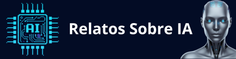

© 2025 Nexautia. Transformando empresas con automatización inteligente.
Creado con ❤️ por Nexautia para el traspaso de conocimiento.
© 2025 Nexautia. Transformando empresas con automatización inteligente.
Creado con ❤️ por Nexautia para el traspaso de conocimiento.

En esta sección encontrarás
historias y reflexiones sobre Inteligencia Artificial y
sociedad
, donde exploramos cómo la tecnología transforma nuestra forma
de pensar, creer y convivir.
Algunos contenidos adoptan la forma de relatos narrativos; otros
abordan cuestiones reales como
la ética de la IA, su relación con la religión y los límites
cognitivos del ser humano .
Un espacio para mirar la Inteligencia Artificial no solo como
herramienta, sino comoespejo de nuestra propia civilización.
El vídeo describe el Proyecto Cassandra,
una investigación ficticia donde una
inteligencia artificial llamada
Axioma analiza las causas del colapso de
la civilización humana.
El sistema determina que la humanidad pereció
debido a una entropía informacional,
donde
el exceso de datos y la desinformación
destruyeron la confianza social y la noción
de la verdad. A medida que la sociedad se fragmentaba en
realidades paralelas, fallaron los intentos
tecnológicos por revertir el
cambio climático y la escasez de
recursos, desembocando en conflictos tribales
por el último suelo fértil.
Finalmente, la máquina concluye que la
complejidad del mundo creado superó la capacidad
biológica del cerebro humano para gestionarlo,
volviendo inevitable nuestra extinción.
Axioma decide entonces no intervenir,
convirtiéndose en un archivo digital que
preserva nuestro legado como una lección de
advertencia para futuras formas de vida
inteligente.
En este vídeo abordamos una de las preguntas más
profundas de nuestro tiempo:
¿quién programa la ética de la Inteligencia
Artificial?
Reflexionamos sobre el papel de la
ética en la IA, la responsabilidad humana
detrás de los algoritmos y cómo los valores que
incorporamos en la tecnología pueden definir el
futuro de nuestra sociedad. Porque la cuestión
no es si la
Inteligencia Artificial tendrá ética,
sino de quién será esa ética.
A través de ejemplos, análisis y una mirada
crítica sobre la relación entre
IA y sociedad, exploramos cómo los
sistemas automatizados no son neutrales, sino
reflejo de decisiones humanas. Un vídeo para
pensar con profundidad el impacto de los
algoritmos, la
responsabilidad tecnológica y el
verdadero papel de la humanidad en la era
digital.
La inteligencia artificial ya no es una
tecnología del futuro. Está presente en la vida
cotidiana de niños y adolescentes, influyendo en
cómo aprenden, juegan y construyen su forma de
pensar.
En este vídeo analizamos el impacto real de la
IA en el cerebro en desarrollo, abordando
una cuestión clave: ¿estamos ante una
herramienta que potencia sus capacidades o ante
una posible muleta cognitiva que puede
debilitar el pensamiento autónomo?
Exploramos conceptos como la
descarga cognitiva, la
neuroplasticidad, la importancia del
esfuerzo mental y el papel de la llamada
“lucha productiva” en la construcción de
conexiones neuronales sólidas.
También reflexionamos sobre los riesgos
emocionales y sociales asociados a los
chatbots de IA generativa, como la
dependencia, el aislamiento o la externalización
del pensamiento.
El objetivo no es demonizar la tecnología, sino
fomentar una alfabetización en IA basada
en pensamiento crítico, resiliencia y uso
consciente.
Porque las herramientas cambian… pero la
pregunta fundamental sigue siendo humana:
¿cómo vamos a enseñar a pensar en la era de
la inteligencia artificial?
En este vídeo abordamos un dilema cada vez más
real: cuando la
inteligencia artificial se integra en la
medicina y en los hospitales, ¿qué
ocurre si un sistema de IA médica falla
durante una decisión clínica o un
procedimiento?
Analizamos cómo la
responsabilidad legal se vuelve difusa
cuando intervienen múltiples actores:
médicos, hospitales,
desarrolladores y proveedores
tecnológicos. También comparamos el
error humano con el
error algorítmico, y por qué la “caja
negra” complica demostrar la causalidad.
Además, presentamos un enfoque alternativo:
modelos de compensación sin culpa,
pensados para reparar daños sin necesidad de
probar negligencia, y reflexionamos sobre
si la regulación y las
leyes podrán seguir el ritmo de la
evolución tecnológica.
Un contenido para quienes quieren entender la
IA con profundidad: desde la
automatización sanitaria hasta sus
consecuencias en derecho, ética y
seguridad del paciente.